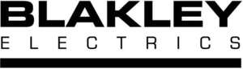

Trade Mark Journal No.2026/001 2 January 2026
UK00004311121 16 December 2025 (9,11,37)
Mark 1
Mark 2

- Class 9
- Electrical transformers; Electric voltage transformers; Electrical cables; Electrical cabling; Electrical conductors; Electrical cable; Electrical cords; Electrical fuses; Electrical connectors; Electrical relays; Electrical batteries; Electrical sockets; Electrical terminals; Electrical switches; Electrical coils; Electrical rectifiers; Electrical transducers; Electrical components; Electrical and electronic connectors; Electronic and electrical connectors; Electrical resistors; Electrical connections; Electrical inductors; Electrical plugs; Electrical outlets; Electrical couplings; Electrical sensors; Electrical adaptors; Electrical converters; Electrical adapters; Electrical contacts; Insulated electrical cables; Electrical and electronic components; Electrical distributors; Electrical controllers; Electric wiring; Electrical power adaptors; Electrical circuit components; Electrical meters; Insulated electrical connectors; Electrical cables for use in connections; Electrical locks; Electrical controls; Electrical terminators; Power distributors [electrical]; Insulated cable for electrical installations; Electrical cable connectors; Electrical circuit testers; Electrical distributing busbars; Electrical control circuits; Electrical circuit breakers; Connecting electrical cables; Integrated electrical circuits; Markers for electrical conductors; Electrical measuring equipment; Plug-in electrical connectors; Electrical engineering software; Electrical bare wires; Electrical reducing transformers; Electrical storage batteries; Electrical resistance coils; Electrical terminal connectors; Electrical filters; Electrical communications instruments; Housings for electrical apparatus; Printed electrical circuits; Electrical switching apparatus; Transformers; Dry-type transformers; Voltage transformers; Electricity transformers; Transformers [electricity]; Electric transformers; Step-up transformers; Distribution transformers; High voltage transformers; Electric current transformers; Autotransformers; Step up transformers; Step down transformers; Switchboxes [electricity]; Distribution boxes for electrical power; Mains distribution panels (Electric -); Voltage converters; Distribution boxes; Distribution boards; Electricity distribution boxes; Distribution boxes [electricity]; Electrical distribution boxes; Distribution consoles [electricity]; Distribution boards [electricity]; Electricity distribution boards; Panels for the distribution of electricity; Electrical power distribution blocks; Electric power distribution apparatus; Distribution panel boards [electricity]; Apparatus and instruments for controlling the distribution of electricity; Apparatus and instruments for switching the distribution of electricity; Power distributing boxes; Batteries for lighting; Ballasts for electrical lighting fittings; Electronic ballasts for lighting purposes.
- Class 11
- Electrical luminaires; Electrical lamps; Lamps for electrical installations; Electrical discharge lighting fixtures; Electrical lighting fixtures; Lighting transformers; Lighting; Lighting lamps; Lighting fixtures; Luminaires for outdoor lighting; Lighting fittings; Outdoor lighting; Electric lighting; Electric lighting fixtures; Lamps for lighting purposes; Outdoor lighting fittings; Emergency lighting; Outdoor electrical lighting fixtures; Industrial lighting fixtures; Indoor electrical lighting fixtures; Security lighting; Lighting panels; LED lighting fixtures; LED [light-emitting diode] lighting fixtures.
- Class 37
- Repair of electrical equipment.
Blakley Electrics Ltd